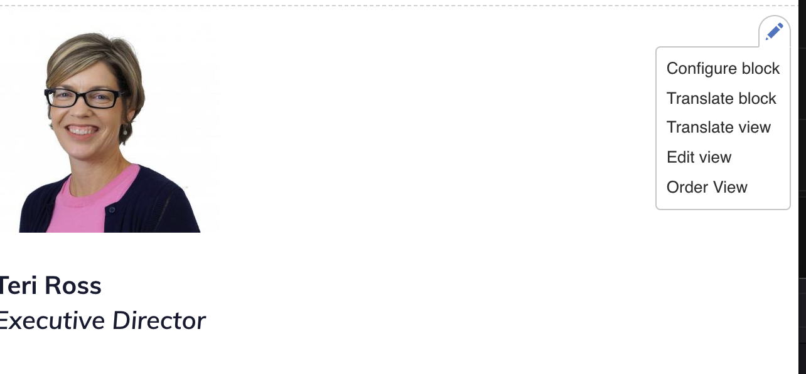
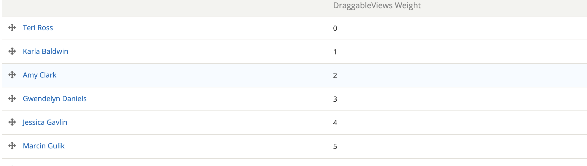

Staff, Board & YPB pages¶
Adding staff, board & YPB members¶
The Staff, board, and young professionals pages in the About section are powered by the respective user profiles of those individuals.
Staff members will be added to the staff page so long as they have an active profile with an @illinoislegalaid.org email address.
Board and YPB members
Note
New staff should register themselves and create their own profile. Board and YPB members may need to have profiles created for them since very few of them ever log into the website.
Removing staff¶
Staff accounts should not be deleted when a staff member leaves. The account should be blocked to preserve their content work. Set their account status to “blocked” from “active ” in their profile. This will cause them to disappear from the staff listing automatically.
Removing board and YPB members¶
If they have never logged in¶
If they have never logged in, you can safely delete their accounts.
If they have logged in¶
Edit their profile and remove any selections from the internal organization list. Once they are untagged from the board or YPB, they will be removed from those pages.
Updating staff, board, and YPB information¶
Ask staff to update their own information
For Board and YPB members:
Use the board and YPB report (located on your profile when you log in) to see the list of members for editing
Click edit next to the member
Update their profile. Fields we use are:
First name
Last name
Company
Job title
For board members, this should be there real job title, not their role at ILAO
For YPB members, this should be their role, if applicable, on the YPB.
Biography
Photo
Save their profile.
Note
The Board automatically adds Chair, Vice-chair, Treasurer, Secretary to the 1st 4 board members in that order.
Ordering staff, board, and YPB members on pages¶
On each of the pages, there is a dropdown with an option to order the view. Select “order view”
You will then see a list of staff, board, or YPB members to order.
Staff list¶
The Executive Director should be listed first; all other staff should be listed alphabetically.
Board¶
Outside of the officers, the rest of the board should be listed alphabetically, starting with a DraggableViews Weight of 4.
Board should be listed in the first 4 spots as:
Chair => 0
Vice-chair => 1
Treasurer => 2
Secretary => 3
YPB¶
Chairs and/or co-chairs should be listed first. All others should be listed alphabetically below.